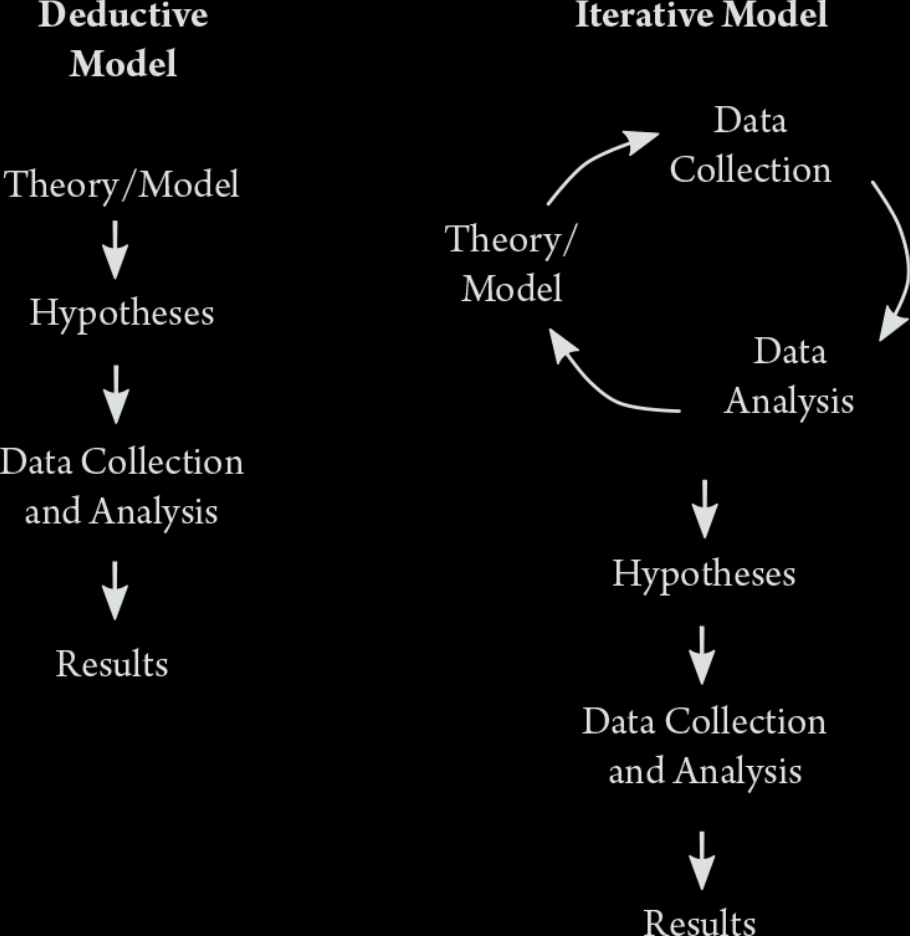

STV2022 – Store tekstdata
Introduksjon 
Solveig Bjørkholt | Martin Søyland <solveig.bjorkholt@stv.uio.no> | <martin.soyland@stv.uio.no>
Undervisning
Forelesninger
Intro! (uke 34)
Anskaffelse og innlasting av tekst (uke 35)
Forbehandling av tekst 1 (uke 36)
Forbehandling av tekst 2 (uke 37)
Bruke API (Stortinget) (uke 38)
Veiledet versus ikke-veiledet læring (uke 41)
Ordbøker, tekstlikhet og sentiment (uke 42)
Klassifisering av tekst – temamodellering (uke 43)
Estimere latent posisjon fra tekst (uke 44)
Oppsummering! (uke 46)
Seminarer
Hvordan gjøre…
- … scraping
- … preprosessering
- … visualisering
- … modellering 1
- … modellering 2
Pensum
Grimmer J, Roberts ME, Stewart BM (2022). Text as Data: A New, Framework for Machine Learning and the Social Sciences. Princeton, University Press.
Grunnbok!
Silge J, Robinson D (2017). Text mining with R: A tidy approach., O’Reilly Media, Inc. https://www.tidytextmining.com/.
Tidy tekstformat
Benoit K, Watanabe K, Nulty P, Obeng A, Wang H, Lauderdale B, Lowe W, (2017). quanteda: Quantitative Analysis of Textual Data. R package, version 0.9.9-65, http://quanteda.io.
Tekstmodellering
+ En hau med artikler og mindre bidrag
Prosessen

Grimmer, Roberts, and Stewart (2022, 15)
Enkelt eksempel
- Finne og hente data
- Alle tekster fra siste No. 4 album
- Stukturere data
- Fra rå tekst/.html til datasett
- Preprosessere data
- Ta valg!
- Visualisere data
- Hva viser data?
- Analysere data
- Kan vi gjøre slutninger?
Finne og hente data
# Laste inn pakker
library(rvest)
library(tidyverse)
# Url for alle sanger i albumet
url <- "https://genius.com/albums/No-4/No-4"
# "Skrape" nettsiden
raw_data <- read_html(url)
# Trekke ut titteltekster fra siden
titler <- raw_data %>%
html_elements("div.chart_row-content > a > h3") %>%
html_text() %>%
str_trim() %>%
str_remove_all("\\s+Lyrics")
# Trekke ut urlene til hver sang
track_urls <- sapply(raw_data %>%
html_elements("div.chart_row-content > a") %>%
html_attrs(),
"[[", 1)
# Strukturere tekstene til hver sang
text <- lapply(1:length(track_urls), function(x){
# Skrape url x
tmp <- read_html(track_urls[x])
# Trekke ut tekst og renske den
tmp2 <- tmp %>%
html_elements("div.Lyrics__Container-sc-1ynbvzw-6.jYfhrf") %>%
html_text2() %>%
str_split("\\n") %>%
unlist() %>%
str_c(collapse = " ") %>%
str_remove_all("\\[(.*?)\\]") %>%
str_replace_all("\\s+", " ") %>%
str_trim()
# Legge inn "soving" mellom x'er
Sys.sleep(2+rnorm(1, 3))
# Returnere resultatet
return(tmp2)
})
# Kombinere alt til et datasett
no4 <- tibble(spor = 1:length(titler),
titler,
tekst = unlist(text))
head(no4)## # A tibble: 12 × 3
## spor titler tekst
## <chr> <chr> <chr>
## 1 1 Parentes "Forstyrrer jeg, eller har du "
## 2 2 En av de levende "Sånne dager som den her Når a"
## 3 3 Hvilket vi "Har du tid til meg nå? Plutse"
## 4 4 Hold deg fast "Jeg gir meg, bare ta meg Du f"
## 5 5 Feil sted "Du bare dro Pakket bagen og s"
## 6 6 Regndanse i skinnjakke (Ft. F "I kveld er nå, og året, alt a"
## 7 7 Hele livet (Ft. Fredrik Høyer "Er tom for ord og ting å si N"
## 8 8 Hjemme hos meg "Hjemme hos meg (Hjemme hos me"
## 9 9 Alt vi ikke er "Når alle er våkne, når solen "
## 10 10 Så lenge vi finnes "Leter du etter hennes blikk i"
## 11 11 Du trenger ikke å bli stor "Jeg ser deg gå alene ut Se de"
## 12 12 Våre beste år "Greit, jeg skjønner tegninga "Strukturere og preprosessere data
Visualisere data
Analysere data
Typer analyse
Deskriptiv
Veiledet vs. ikke veiledet læring
Ordbøker, tekstlikhet og sentiment
Klassifisering av tekst
Estimere latent posisjon fra tekst
Oppsummering